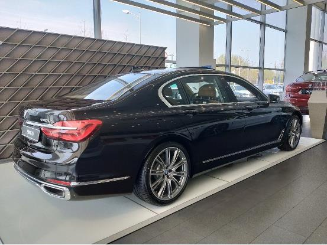

我要是说，每天开路虎出去办事，觉觉得不舒服，你肯定会在心里跑过一万多只那个马，说我装的很别致，二的很洒脱。但事实就是这样，车身大，油门慢，方向不灵活，油耗更别提了，你拿桶倒的速度都不一定能赶上他烧油的速度。
你们感受下！
要不是当初家里老爷子非要壮门面，我是一定不会同意买这个行走的砖头的。家里之前有台老A6，注意不是A6L，是A6，是不是很牛，开了十来年，后来转手抵账弄了出去。也算是功臣一个了。
忍无可忍，无需再忍。已经跟老爷子协商好了，路虎归他，我再弄个自己喜欢的，他绝对不过问。这样才开始了美滋滋的看车程序。
选来选去，还是没能逃出BBA这个圈，但S级率先淘汰，我的年龄还不太好驾驭这个气质的车，所以A8L和7系形成了二选一的局势，从拿到驾照的那天开始，开的第一辆车就是那个老A6，2.8的排量，绝对是暗流涌动，随时准备爆发的节奏，所以我对奥迪的印象一直还是不错的。宝马是因为看《寒战》的时候，看到郭富城的座驾，才开始有点感觉，具体选哪个慢慢听我说！
To be ,or not to be,this is a question！
这个级别的车其实没有好坏之分，只有适合不适合，喜欢不喜欢罢了。
7系

对于7系，整体的感觉是中规中矩，并没有太多惊艳的地方，但是也有一些自己比较喜欢的点。例如7系的钥匙，符合我的口味，很有未来感的设计，还有车灯上的BMW的小logo字样，我也喜欢，但大部分还是有些审美疲劳以及中规中矩的东西。例如经典的双肾，如果是新X5的设计，该有多好，例如中控的氛围，没毛病，但是缺少戳中内心的东西。当然，充足舒适的车内空间就不说了，这个级别的车，这些都是最基本的东西。
A8L
是的，这就是我的选择——A8L。刚刚提车没几天！
为什么选择A8L呢？因为他给我的新鲜感更多以及初心。
外观上选择A8L的原因主要有两点：
1.年轻
选择A8L的原因之一就是整体给人的感觉年轻了很多，全新的大嘴设计以及车身上硬朗的线条，能够让我更加轻松的驾驭。当然7系一直都有运动基因的，就像上文所说的，A8L的新鲜感更强烈。
2.车灯
大家称奥迪为灯厂，A8L的车灯不用多说，看图就知道比7系的要有吸引力，除了激光大灯还有贯穿式的尾灯，这都是科技感，辨识度的代名词。
对于内饰来说，没有对比就没有伤害，目前的7系还是上一代的风格，中规中矩，相比较于中规中矩营造豪华感的设计，我更喜欢A8L的这种极简设计。
几乎所有的操作都可以通过触摸的方式来进行调节，例如中控以及后排的屏幕，空调的调节按键等等，尤其是前排的两块中控屏幕，除了反应灵敏，功能丰富之外，我更喜欢它回应的物理反馈，很舒服。当然，A8L的空间，舒适度之类自然不用多说，很舒服，坐在后排通过后排的三块屏幕可以调节车内的各种功能。
最后再说下操控吧
3.0T的V6发动机，刚刚着车就已经可以感觉到6缸工作衔接的缜密性了，频率很快，似乎给人一种一踩油门就会蹿出去的感觉，当起步的时候，首先介入的是电机，48V电混搭配3.0T发动机，起步很平顺，如果深踩油门，那推背感是很直接的，在动力方面，这台发动机绝对足以给你想要的任何爆发力。至于减震的舒适度，都已经这个级别了，就不用多说了吧，但凡是颠簸的路面，悬架过滤的非常好。另外要提一下的是虚拟驾驶舱和中控屏，科技感先放一边，从使用的便捷程度来说，虚拟驾驶舱是非常合理的设计，导航可以在仪表盘的位置直接显示出来，解决了看看导航再看看路的烦恼。
PS：相比较于奔驰S，奥迪的极简主义和S级的雍容华贵相比，还是觉的A8L的这种极简风更对我的口味。